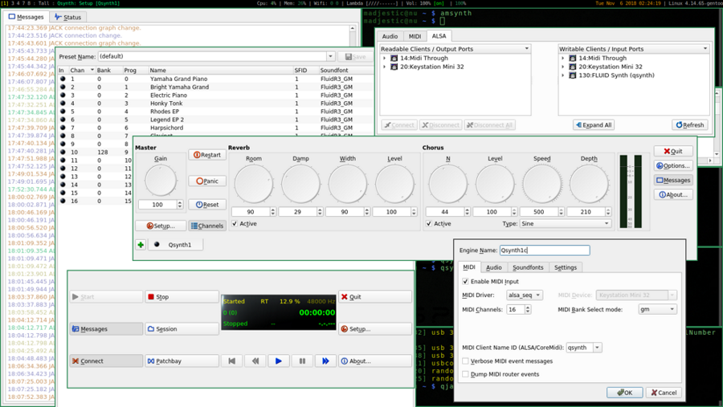

Posted on November 5, 2018
Some notes primarily to myself and others stuck with JACK, keystation mini 32 midi keyborad under Linux
stolen from here:
This guide assumes a kernel that has been setup to support MIDI devices, such as Keystation Mini 32, for example this kernel config:
Plug in the keyboard into the USB port and check if your dmesg is showing something similar:
$ dmesg
...
[30937.290895] usb 3-1: USB disconnect, device number 5
[30942.383408] usb 3-1: new full-speed USB device number 11 using xhci_hcd
[30942.511908] usb 3-1: New USB device found, idVendor=0a4d, idProduct=129d
[30942.511913] usb 3-1: New USB device strings: Mfr=1, Product=2, SerialNumber=0
[30942.511916] usb 3-1: Product: Keystation Mini 32
[30942.511919] usb 3-1: Manufacturer: Keystation Mini 32
Assuming that you do, let’s do the following checks:
$ aconnect -l
client 0: 'System' [type=kernel]
0 'Timer '
1 'Announce '
Connecting To: 15:0, 128:0
client 14: 'Midi Through' [type=kernel]
0 'Midi Through Port-0'
Connected From: 20:0
client 15: 'OSS sequencer' [type=kernel]
0 'Receiver '
Connected From: 0:1
client 20: 'Keystation Mini 32' [type=kernel,card=1]
0 'Keystation Mini 32 MIDI 1'
Connecting To: 14:0, 129:0$ aseqdump -p 20where 20 is the client number from the previous command - this can help you see if your midi device is producing any output. Then start qjackctrl and qsynth:
$ qjackctl
$ qsynthIf qsynth does not show up among ALSA devices, make sure that MIDI driver is set to alsa_seq, you should see a picture similar to the one below:

If all went fine, connect your Keystation to Qsynth inside ALSA devices window and play some music!
References arch-linux wiki